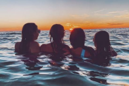
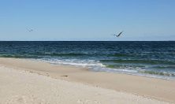
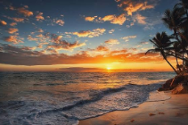

On the Water
Isle of Palms Bachelorette Boat Day: Pontoons, Sandbars and Sunset Cruises
A day on the water is the one activity nearly every bridal group asks for. Here is how to set it up from the Isle of Palms Marina.
A day on the water is the one activity nearly every bridal group asks for. Here is how to set it up from the Isle of Palms Marina.

The Isle of Palms Marina at the end of 41st Avenue is the hub for almost every water activity on the island. Boats leave from here into the Intracoastal Waterway, the tidal creeks behind the island, and out toward Capers Island and the sandbars near Breach Inlet. Pick the type of day first, relaxed float, adrenaline, or sunset toast, and the booking choice follows.
Isle of Palms Marina rents pontoons, center consoles and skiffs by the half and full day. A pontoon is the right call for a bridal group: shade, bench seating, room for a cooler and a Bluetooth speaker. Someone in the group needs to be comfortable driving, and South Carolina requires a boater education card for younger operators, so ask the marina what they need from your designated captain. Half a day is usually plenty for a first-timer crew, especially with an afternoon dinner reservation.
If nobody wants to captain, hire one. Charter marketplaces like GetMyBoat list private party boats around Isle of Palms and Mount Pleasant with captains who know the sandbars, many with water mats and onboard bathrooms. For a more relaxed outing, Barrier Island Eco Tours runs naturalist-led trips from the marina to Capers Island, an undeveloped barrier island reachable only by boat, plus dolphin sunset cruises. Guests can bring their own drinks on many trips, but confirm the policy before you pack the cooler.


Tidal Wave Water Sports operates out of the marina with WaveRunner rentals and guided tours, parasailing, banana boat rides and tubing. Parasailing works well for a split group, since a few people can fly while the rest watch from the boat. Guided jet ski tours run through the backwaters toward Capers and Breach Inlet, and staff handle the instruction.
For a quieter morning, paddleboards and kayaks are an easy add. Coastal Expeditions runs guided paddles from Shem Creek in Mount Pleasant, about fifteen minutes away, if your group wants a calm outing before brunch.
A sunset cruise is the easiest way to get the group photo everyone wants. Book a late-afternoon departure, plan matching outfits, and time dinner for after you dock. Islander 71 sits right next to the marina with a deck bar on the water, so you can walk straight from the boat to a table. For the rest of the weekend, from where to stay to the full itinerary, head back to the Isle of Palms bachelorette party guide.

A few practical notes: book boats four to eight weeks out for spring and summer weekends, bring reef-safe sunscreen and a dry bag for phones, and keep glass off the boat. Weather on the coast changes fast in summer, so ask each company about their rain and wind policy when you book.